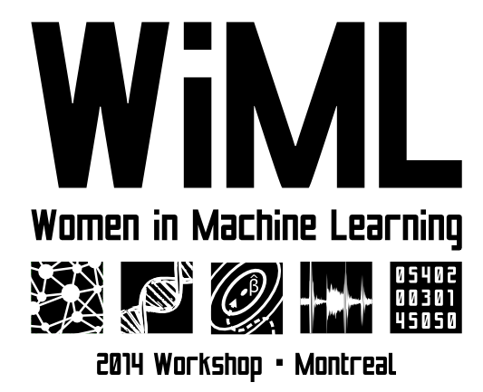
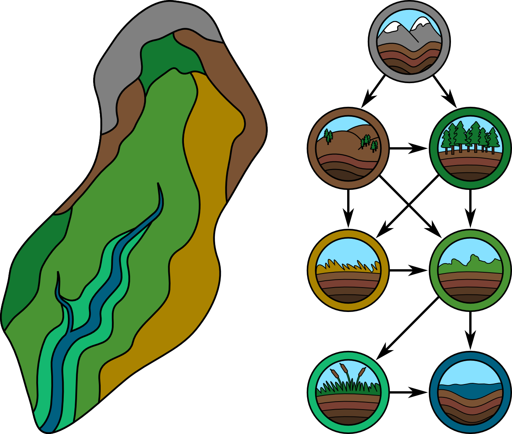
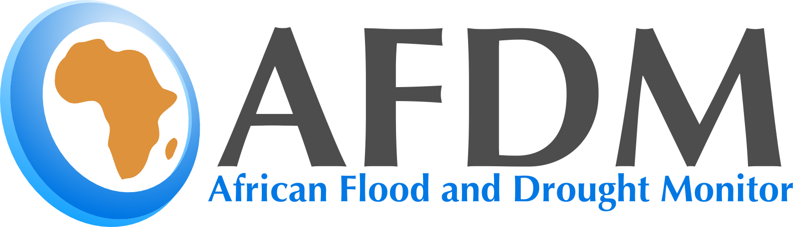
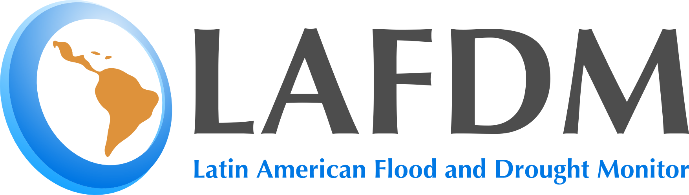

|  |
Women in Machine Learning As an organizer for the 2014 WiML workshop, I wanted to print tote bags for the attendees, and so designed this logo. Each of the five boxes represents something related to machine learing: networks (biological, arificial, or social), DNA for genomics, optimization, audio or other time dependent signal, and matrices (which are used in many ways, including to analyze user data like clicks). This logo ended up being used for more than just the original purpose of tote bags: it was used on Facebook and Twitter, as well as for leaderhead and invited speaker gifts. |
|  |
HydroBloks We are working on tailoring topic models to help crisis counselors. In particular, we are interested in the relationships between caller issues and counselor actions. One application of our model would be to provide suggestions to counselors. |
|   |
Flood and Drought Monitor logos Talk about how I also did one for latin america. Topic modeling is a machine learning method that learns underlying themes in a collection of documents, which can be used to summarize and organize the documents. We have created a method for visualizing topic models, allowing users to explore a corpus by navigating between high level topic descriptions and individual documents, hopefully deepening their understanding of the corpus.
Visualizing Topic Models
|
|
Latin Grad student logo Talk about how I did this logo and why... what are the boxes? |
{kind=link}
{kind=link}
{kind=link}
{kind=link}
{kind=link}